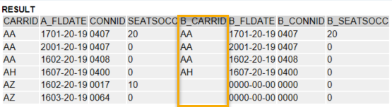

AS ABAP Release 755, ©Copyright 2026 SAP SE. All rights reserved.
ABAP - Keyword Documentation → ABAP - Programming Language → Processing External Data → ABAP Database Access → ABAP SQL → ABAP SQL - Read Access → SELECT, clauses →
SELECT, ORDER BY
Syntax
... ORDER BY { {PRIMARY KEY}
| { {
col1|a1} [ASCENDING|DESCENDING] [{NULLS FIRST} | {NULLS LAST}],
{col2|a2} [ASCENDING|DESCENDING] [{NULLS FIRST} | {NULLS LAST}], ...}
| (column_syntax) } ...
Alternatives:
1. ... ORDER BY PRIMARY KEY
2. ... ORDER BY {col1|a1} [ASCENDING|DESCENDING] [{NULLS FIRST} | {NULLS LAST}],
{col2|a2} [ASCENDING|DESCENDING] [{NULLS FIRST} | {NULLS LAST}], ...
3. ... ORDER BY (column_syntax)
Effect
The addition ORDER BY sorts a multirow result set of a query by the content of the specified column. The order of the rows in the result set is undefined with respect to all columns that are not specified after ORDER BY, and can be different in repeated executions of the same SELECT statement. If the addition ORDER BY is not specified, the order of all the columns in the result set is undefined.
The following restrictions apply when using the addition ORDER BY with other additions:
- The addition ORDER BY cannot be used with the addition SINGLE.
- All columns specified after ORDER BY must also be specified after the addition GROUP BY at the same time.
- If aggregate functions are specified after SELECT, all columns that are specified after ORDER BY and that do not have an alias name for an aggregation function must also be specified after SELECT and after GROUP BY.
- If an alias name defined using AS is used for sorting, this name must be unique and cannot be the same name as a column that does not have any alias names.
- If the addition DISTINCT is used, only those columns can be specified after ORDER BY that are also specified after SELECT. The exception to this rule is client column when PRIMARY KEY is specified. If not, other columns can also be used, as long as there are no restrictions by other additions such as GROUP BY.
- If the addition FOR ALL ENTRIES is used in front of the WHERE condition,, ORDER BY can only be used with the addition PRIMARY KEY and all columns of the primary key (except the client column of client-dependent tables) must be specified after SELECT list.
Hints
- The data is sorted in the database system, once all other actions are completed, such as the definition of the hit list using WHERE, the calculation of aggregate functions, and grouping using GROUP BY. Only the additions UP TO, OFFSET are executed on the sorted hits.
- Sorts in the database system are performed in accordance with the rules for size comparisons and the restrictions with regard to platform dependencies apply. More specifically, sorts performed using character-like values can be platform-dependent under certain circumstances and produce different results than ABAP sorts.
- For performance reasons, a sort should only take place in the database if supported by an index. This guaranteed only when ORDER BY PRIMARY KEY is specified. If a suitable index is not available, the result set must be sorted at runtime. This should be done using SORT on AS ABAP and not using ORDER BY in the database system. Even if a suitable index does exist, ORDER BY col1 col2 ... should be used for large amounts of data only if the order of the database fields col1 col2 ... is the same as the order in the index.
- If a sorted resulting set is assigned to a sorted internal table, the internal table is sorted again according to the sorting instructions.
... ORDER BY PRIMARY KEY
Effect
The result set is sorted in ascending order by the content of the primary key of a single data source. The following restrictions apply:
- The addition PRIMARY KEY cannot be specified if a join expression or a path expression is used in the SELECT statement to select the data of multiple data sources.
- The addition PRIMARY KEY cannot be specified in a subquery.
- The addition PRIMARY KEY cannot be specified for a result set joined with UNION.
- The addition PRIMARY KEY cannot be used when accessing a common table expression defined using WITH.
- The addition PRIMARY KEY cannot be specified when views that contain exactly the same number of key fields as view fields are accessed. If a DDIC database view like this is specified after FROM in the dynamically specified source_syntax, an exception is raised only in the strict modes of the syntax check from Release 7.40, SP05. In all other cases, the result set is sorted by all columns.
- If a CDS entity is sorted by the PRIMARY KEY, its key elements must be defined at the start of the structure without any gaps.
Hint
If ORDER BY PRIMARY KEY is used with the addition FOR ALL ENTRIES in front of the WHERE condition, all fields of the primary key (except for the client column in client-dependent tables) must be in the SELECT list.
Example
Reads the data from the DDIC database table SFLIGHT for Lufthansa flight 0400, sorted by the third key field (the flight date).
SELECT *
FROM sflight
WHERE carrid = 'LH' AND
connid = '0400'
ORDER BY PRIMARY KEY
INTO TABLE @DATA(result).
... ORDER BY {col1|a1} [ASCENDING|DESCENDING] [{NULLS FIRST} | {NULLS LAST}],
{col2|a2} [ASCENDING|DESCENDING] [{NULLS FIRST} | {NULLS LAST}], ...
Effect
For any columns specified in the SELECT list, a comma-separated list of columns can be specified after ORDER BY to be used as a sort criterion. Columns can be specified directly using the column names col1, col2 ... or using the alias names a1, a2 ... defined using AS . The latter is necessary if sorting is to be done by columns of the result set that are defined in the SELECT list using non elementary SQL expressions.
The additions ASCENDING and DESCENDING determine whether the column in question is sorted in ascending or descending order. If neither addition is specified, the column is sorted in ascending order. The priority of sorting is based on the order in which the components col1 col2... or a1 a2 ... are specified.
The additions NULLS FIRST and NULLS LAST determine whether null values are placed before or after non-null values. If neither addition is specified, potential null values are placed at the beginning of the result set. If only DESCENDING is specified and no nulls occur, null values are placed at the end of the result set.
The following table shows the default behavior of the additions ASCENDING, DESCENDING, NULLS FIRST, and NULLS LAST.
| Addition | Default Behavior of Result Set |
| No addition | ASCENDING + NULLS FIRST |
| NULLS LAST | ASCENDING + NULLS LAST |
| DESCENDING | DESCENDING + NULLS LAST |
Columns specified after ORDER BY cannot be of the type LCHR, LRAW, STRING, RAWSTRING, or GEOM_EWKB.
Hints
- If single columns are specified in the addition ORDER BY, the statement SELECT uses table buffering only in the following cases:
- The columns specified are a left-aligned subset of the primary key in the correct order and no further columns are specified.
- The columns specified represent the whole primary key in the correct sequence. Additional columns that are specified have no affect on the sorting.
- The addition DESCENDING is not specified.
- In other cases, table buffering is ignored.
- When a comma-separated list is used, the syntax check is performed in a strict mode, which handles the statement more strictly than the regular syntax check.
- If specified, the columns col1, col2, ... can contain a path expression for CDS associations or CTE associations.
- Instead of using commas, blanks can be used to separate columns specified in an obsolete form. Commas must be specified, however, in the strict modes of the syntax check from Release 7.40, SP05.
- The additions NULLS FIRST and NULLS LAST are not supported by all databases. In an ABAP program, it is possible to use the method USE_FEATURES of the class CL_ABAP_DBFEATURES to check whether the current database system or a database system accessed using a secondary connection supports the use of these additions. This requires the constant ORDER_BY_NULLS_FIRST_LAST of this class to be passed to the method in an internal table.
- NULLS FIRST and NULLS LAST enforce strict mode from Release 7.55.
Example
The rows of DDIC database table sflight are grouped by the columns carrid and connid, where for each group the minimum of column seatsocc is determined. The selection is sorted in ascending order by carrid and in descending order by the minimum of occupied seats. The alternative name min is used for the aggregate expression.
SELECT carrid, connid, MIN( seatsocc ) AS min
FROM sflight
GROUP BY carrid, connid
ORDER BY carrid ASCENDING, min DESCENDING
INTO TABLE @DATA(result).
cl_demo_output=>display_data( result ).
Example
To generate null values, a left outer join is carried out on table DEMO_SFLIGHT_AGG and the result set is ordered by its column CARRID with nulls at the end of the table. The program DEMO_SELECT_ORDER_NULLS executes the statement and displays the result.
SELECT FROM demo_sflight_agg AS a LEFT OUTER JOIN demo_sflight_agg AS b
ON a~carrid = b~carrid AND
a~connid = b~connid AND
a~fldate = b~fldate AND
a~connid LIKE '04%'
FIELDS a~carrid,
a~fldate AS a_fldate,
a~connid,
a~seatsocc,
b~carrid AS b_carrid,
b~fldate AS b_fldate,
b~connid AS b_connid,
b~seatsocc AS b_seatsocc
WHERE a~carrid LIKE 'A%'
AND a~fldate LIKE '%'
AND a~connid LIKE '0%'
ORDER BY b~carrid NULLS LAST
INTO TABLE @DATA(result).

... ORDER BY (column_syntax)
Effect
As an alternative to specifying columns statically, a parenthesized data object column_syntax can be specified that contains the syntax of PRIMARY KEY or the list of columns when the statement is executed.
The same applies to column_syntax as when specifying the SELECT list dynamically. If the content of column_syntax is initial, the addition ORDER BY is ignored. Invalid syntax raises a catchable exception from the class CX_SY_DYNAMIC_OSQL_ERROR.
Security Hint
If used incorrectly, dynamic programming techniques can present a serious security risk. Any dynamic content that is passed to a program from the outside must be checked thoroughly or masked before it is used in dynamic statements. This can be done using the system class CL_ABAP_DYN_PRG or the built-in function escape. See SQL Injections Using Dynamic Tokens.
Hints
- The class CL_ABAP_DYN_PRG contains methods that support the creation of correct and secure dynamically specified columns.
- The literals of the dynamically specified ABAP SQL statements can span multiple rows of a token specified dynamically as an internal table.
- When specified dynamically, ABAP SQL statements can contain the comment characters * and " as follows:
- In a dynamic token specified as a character-like data object, all content is ignored from the first comment character ".
- In a dynamic token specified as an internal table, all rows are ignored that start with the comment character *. In the row, all content is ignored from the first comment character ".
- Comment characters placed within literals are, however, part of the literal.
Example
Dynamic sort by two columns (to be specified).
DATA(column1) = `carrid`.
DATA(column2) = `connid`.
cl_demo_input=>new(
)->add_field( CHANGING field = column1
)->add_field( CHANGING field = column2 )->request( ).
DATA(column_syntax) = column1 && `, ` && column2.
TRY.
SELECT carrid, connid, cityfrom, cityto
FROM spfli
ORDER BY (column_syntax)
INTO TABLE @DATA(result).
cl_demo_output=>display( result ).
CATCH cx_sy_dynamic_osql_semantics.
cl_demo_output=>display( 'Error' ).
ENDTRY.
Executable Example
Dynamic ORDER BY Clause
Continue
 SELECT, Dynamic ORDER-BY Clause
SELECT, Dynamic ORDER-BY Clause